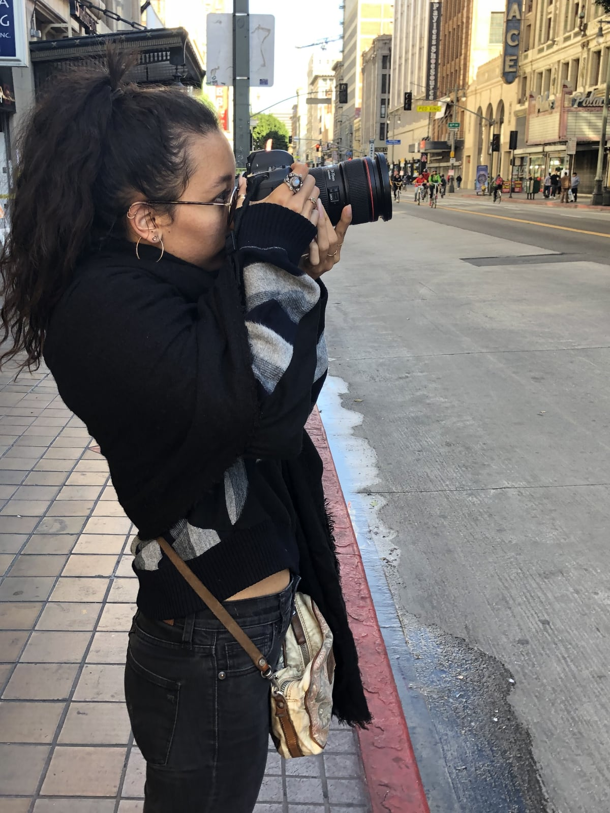
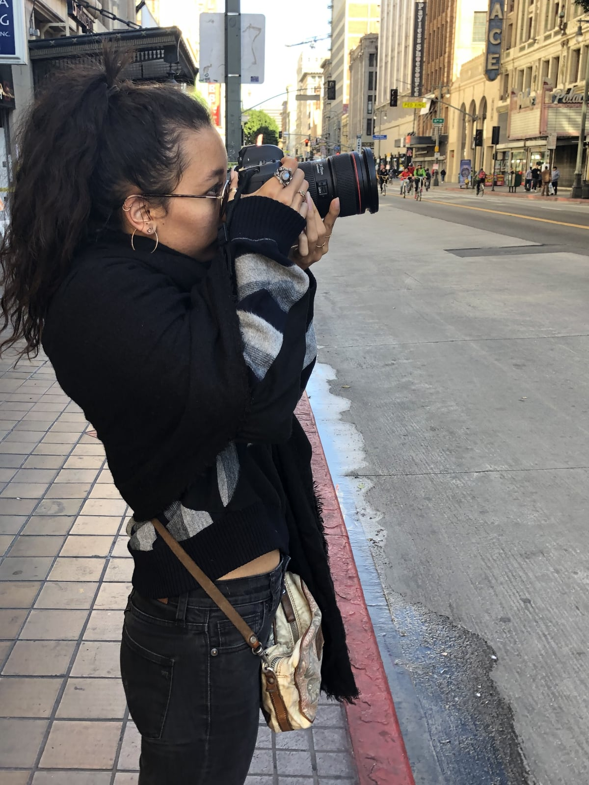

CicLAvia
CicLAvia is an Open Streets event held in Los Angeles where streets are closed to motor vehicles and open for the public to walk, bike, and skate through the open streets. Each CicLAvia event is planned by the nonprofit organisation CicLAvia. The event now attracts over 100,000 participants and expands to connect even more neighborhoods.
and skate through the open streets.